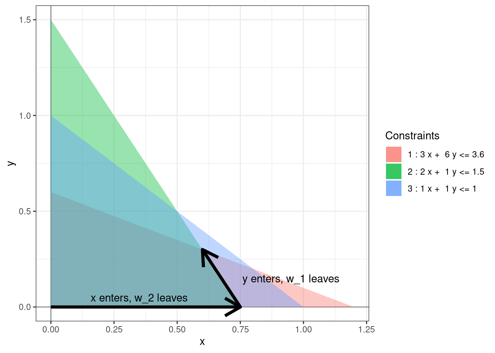

Chapter 3 Simplex method
The Simplex method is an iterative process for finding the optimal solution of a standard linear program. It starts at the some vertex of the feasible region and in each step moves to an adjacent vertex with a higher objective value. The following picture shows one possible run of the simplex algorithm for solving the linear program (1.2).
Figure 3.1: A possible run of the simplex algorithm.
3.1 Entering and leaving variables
In each step, one non-basic variable enters the set of basic variables and one basic variable leaves the set of basic variables. The table below explains how these sets are getting updated in the sample simplex algorithm run in Figure 3.1.
| Leaving variable | Entering variable | Basic variables | Non-basic variables | |
|---|---|---|---|---|
| Start | \(\{w_1, w_2, w_3\}\) | \(\{x, y\}\) | ||
| Step 1 | \(w_2\) | \(x\) | \(\{w_1, x, w_3\}\) | \(\{w_2, y\}\) |
| Step 2 | \(w_1\) | \(y\) | \(\{y, x, w_3\}\) | \(\{w_2, w_1\}\) |

Our goal at each step is now reduced to figuring out the entering and leaving variables.
3.2 Dictionaries
We’ll find the entering and leaving variables using dictionaries. A dictionary is a set of equations describing the objective function and the constraints in terms of the non-basic variables.
Example 3.1 Consider (1.2) again. At the origin the non-basic variables are \(x, y\) and hence the initial dictionary is: \[\begin{equation} \begin{array}{rlrrrr} \mbox{objective} & = & 0 & + & 4x & + & 3y \\ w_1 & = & 3.6 & - & 3x & - & 6y \\ w_2 & = & 1.5 & - & 2x & - & y \\ w_3 & = & 1 & - & x & - & y. \end{array} \tag{3.1} \end{equation}\]
After the first step of the simplex algorithm, the non-basic variables are \(w_2, y\). We can write \(x\) in terms of \(w_2\) to get
\[\begin{equation} x = 0.75 - 0.5 w_2 - 0.5 y \end{equation}\]
We can then substitute this into the initial dictionary to get the dictionary after the first step:
\[\begin{equation} \begin{array}{rlrrrr} \mbox{objective} & = & 3 & + & (-2)w_2 & + & y \\ w_1 & = & 1.35 & - & (-1.5) w_2 & - & 4.5y \\ x & = & 0.75 & - & 0.5 w_2 & - & 0.5y \\ w_3 & = & 0.25 & - & (-0.5) w_2 & - & 0.5y. \end{array} \tag{3.2} \end{equation}\]
Finally, the non-basic variables at the optimal solution are \(w_1, w_2\). We can repeat the above process and get the dictionary for the optimal solution:
\[\begin{equation} \begin{array}{rlrrrr} \mbox{objective} & = & 3.3 & + & (-5/3)w_2 & + & (-2/9)w_1 \\ y & = & 0.3 & - & (-1/3) w_2 & - & 2/9 w_1 \\ x & = & 0.6 & - & 2/3 w_2 & - & (-1/9) w_1 \\ w_3 & = & 0.9 & - & (-1/3) w_2 & - & (-1/9) w_1. \end{array} \tag{3.3} \end{equation}\]
Remark. From the dictionary, one can extract the set of basic variables and the set of non-basic variables by looking at the variables appearing on the LHS and RHS, respectively. Furthermore, by setting the non-basic variables to 0, we obtain the very useful fact that
- the values of the basic variables are simply the constants “\(b_i\)”, and
- the value of the objective function is the constant “\(c_0\)”.
For example, from the final dictionary above, we can immediately see that \(x = 0.6\), \(y = 0.3\), \(w_3 = 0.9\), and the objective value is \(3.3%\) (and \(w_1 = 0\) and \(w_2 = 0.3\)) at the optimal solution.
3.3 The simplex step
We’ll make several simplifying assumptions to begin with and then extend the algorithm to handle more complicated cases. To start, we’ll assume that at each vertex of the feasible region exactly \(n\) variables are non-basic. Such a linear program is called non-degenerate.
Secondly, for the sake of explaining the algorithm, we’ll assume that out variable names and constants are dynamically updated i.e. after each step we rename the variables so that \(\{w_1, \dots, w_m\}\) is the set of basic variables, \(\{x_1, \dots, x_n\}\) is the set of non-basic variables and \(c_j\), \(b_i\), and \(a_{ij}\) are the constants appearing in the dictionary so that at the start of each step the dictionary is as follows:
\[\begin{equation} \begin{array}{rrrrrrrrrr} \mbox{objective} & = & c_0 & + & c_1x_1 & + & \dots & + & c_nx_n \\ w_1 & = & b_1 & - & a_{11} x_1 & - & \dots & - & a_{1n} x_n \\ w_2 & = & b_2 & - & a_{21} x_1 & - & \dots & - & a_{2n} x_n \\ & & & & & \vdots & \\ w_m & = & b_m & - & a_{m1} x_1 & - & \dots & - & a_{mn} x_n \end{array} \tag{3.4} \end{equation}\]
Note that you do not have to make this assumption when actually solving the linear program. This assumption is for exposition purposes only.
3.3.1 Choosing the entering variable
We need to choose the entering variable to be one of the non-basic variables. This non-basic variable is going to increase from 0 to a positive value. Because the objective function has the following expression,
\[\begin{align} \mbox{objective} = c_0 + c_1x_1 + \dots + c_nx_n \end{align}\]
we can choose the variable \(x_j\) to be entering if and only if \(c_j\) is positive as increasing such a variable increases the objective value. We can think of the entering variable as determining the direction of the simplex step.
Example 3.2 In the dictionary (3.1), the objective function is \(4x + 3y\). Hence, both \(x\) and \(y\) can be chosen as the entering variables. Geometrically, we can see that there are two different paths going from the origin to the optimal solution. In the dictionary (3.2), the objective function is \(3 + (-2)w_2 + y\). Hence, only \(y\) can be the entering variable. In dictionary (3.3), the objective function is \(3.3 + (-5/3)w_2 + (-2/9)w_1\). Hence, there cannot be any entering variable.
3.3.2 Choosing the leaving variable
Suppose \(x_j\) is the chosen entering variable. Instead of choosing the leaving variable directly from among the basic variables, we find the largest value that the variable \(x_j\) can be increased to. We can think of finding the leaving variable as determining how far we can move in the direction of the simplex step without leaving the feasible region.
As \(x_j\) increases \(w_i\) will decrease exactly when \(a_{ij} > 0\). Because we want all the variables to be non-negative, we must always have \(w_i = b_i - a_{ij} x_j \ge 0\). But this condition must hold true for all such \(w_i\). Hence, we get that \(w_i\) will be the leaving variable if
\[\begin{align} i = {\arg \min} _{a_{ij} > 0} \dfrac{b_i}{a_{ij}} \end{align}\]
In this case, after the simplex step \(w_i \to 0\) and \(x_j \to {\min} _{a_{ij} > 0} \dfrac{b_i}{a_{ij}}\).
Example 3.3 In the dictionary (3.1), if we choose \(x\) to be our entering variable then we need to get the following ratios to compare
| \(i\) | \(a_{ij}\) | \(b_i\) | \(b_i/a_{ij}\) |
|---|---|---|---|
| 1 | 3 | 3.6 | 1.2 |
| 2 | 2 | 1.5 | 0.75 |
| 3 | 1 | 1 | 1 |
We can see that the smallest ratio is obtained for \(w_2\) hence it is the only candidate for the leaving variable.
3.3.3 Tableau
Once we have found the entering and leaving variables \(x_j\) and \(w_i\), we rewrite \(x_j\) in terms of \(w_i\) and the other non-basic variables to create the updated dictionary as in Example 3.1. This process can get extremely tedious to perform “by hand”. Instead, we introduce tableau to simplify the process.
We start by rewriting the constraints in the dictionary with all the variables on the LHS and all the constants on the RHS:
\[\begin{equation} \begin{array}{rrrrrrrrrr} a_{11} x_1 & + & \dots & + & a_{1n} x_n & + & w_1 & & & & & & = & b_1\\ a_{21} x_1 & + & \dots & + & a_{2n} x_n & & & + & w_2 & & & & = & b_2\\ & & & & & \vdots & \\ a_{m1} x_1 & + & \dots & + & a_{mn} x_n & & & & & & + & w_m & = & b_m\\ \end{array} \end{equation}\]
This can then be encoded using the following augmented matrix:
\[\begin{equation} \begin{array}{rrrrrrrrrrr|r} a_{11} & & \dots & & a_{1n} & 1 & & & & & &b_1\\ a_{21} & & \dots & & a_{2n} & & & 1 & & & &b_2\\ & & & & & \vdots & \\ a_{m1} & & \dots & & a_{mn} & & & & & & 1 &b_m\\ \end{array} \end{equation}\]
We add back the objective function, but because of a quirk of algebra we need to add the objective function coefficients as follows.
\[\begin{equation} \begin{array}{rrrrrrrrrrr|r} c_1 & & \dots & & c_{n} & 0 & & 0 & \dots & & 0 &-c_0\\ \hline a_{11} & & \dots & & a_{1n} & 1 & & & & & &b_1\\ a_{21} & & \dots & & a_{2n} & & & 1 & & & &b_2\\ & & & & & \vdots & \\ a_{m1} & & \dots & & a_{mn} & & & & & & 1 &b_m\\ \end{array} \end{equation}\]
The columns in this augmented matrix correspond to the variables \(w_i\) and \(x_j\). The columns with the pivots correspond to the basic variables.
If \(x_j\) is the entering variable and \(w_i\) is the leaving variable, then we simply perform elementary row operations and turn the entry \(a_{ij}\) into a pivot for its column. Hence, this step is also called the pivot step.
Example 3.4 The tableau corresponding to the dictionary (3.1) is as follows:
\[\begin{align} \begin{bmatrix} 4 & 3 & 0 & 0 & 0 & 0 \\ 3 & 6 & 1 & 0 & 0 & 3.6 \\ \boxed{2} & 1 & 0 & 1 & 0 & 1.5 \\ 1 & 1 & 0 & 0 & 1 & 1 \end{bmatrix} \end{align}\]
If we choose \(x\) as the entering variable and \(w_2\) as the leaving variable then we need to pivot about the entry \(a_{21}\) using elementary row operations to get the following tableau:
\[\begin{align} \begin{bmatrix} 0 & 1 & 0 & -2 & 0 & -3 \\ 0 & 4.5 & 1 & -1.5 & 0 & 1.35 \\ \boxed{1} & 0.5 & 0 & 0.5 & 0 & 0.75 \\ 0 & 0.5 & 0 & -0.5 & 1 & 0.25 \end{bmatrix} \end{align}\]
which corresponds to the dictionary (3.2).
3.4 Stopping conditions
Once we’ve found the entering and leaving variables, we can update the dictionary using the pivot step and start the process again. However, we might not always be able to find the entering and leaving variables.
3.4.1 No entering variable
If no entering variable is found, then the geometry tells us that there is no direction in which the objective value can be increased i.e. we’re at a local maxima. But because the objective function is a linear function this local maxima is also an absolute maxima and provides an optimal solution to our linear program.
Algebraically, this happens when none of the \(c_i\) are positive.
3.4.2 No leaving variable
If no leaving variable is found, then the geometry tells us that we can keep increasing the entering variable indefinitely without leaving the feasible region. Such a linear program is called unbounded. An unbounded linear program has no optimal solution as the objective value can be made arbitrary large without leaving the feasible region.
Algebraically, this happens when none of the \(a_{ij}\) are positive.